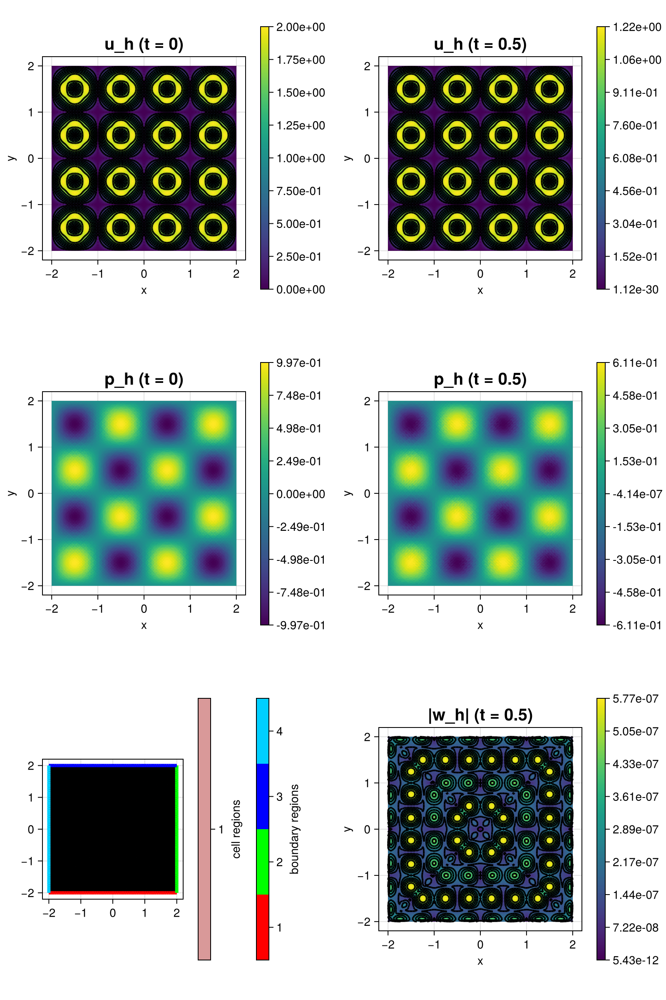

290 : Poro-Elasticity
This example concerns the three-field solution $(\mathbf{w},\mathbf{u},p)$ of Biot's consolidation model in poroelasticity given by
\[\begin{aligned} -(\lambda + \mu) \nabla (\mathrm{div} \mathbf{v}) - \mu \Delta \mathbf{v} + \alpha \nabla p & = f \quad \text{in } \Omega \times [0,T]\\ \partial_t (c_o + α \mathrm{div}(\mathbf{v})) + \mathrm{div}(w\mathbf{w}) & = g \quad \text{in } \Omega \times [0,T]\\ K^{-1} \mathbf{w} + \nabla p & = 0 \quad \text{in } \Omega \times [0,T] \end{aligned}\]
and suitable boundary conditions and given initial state.
The discretisation involves an Hdiv-conforming reconstruction operator to avoid Poisson locking which results in a scheme similar to the one suggested in the reference below. As a test problem the first benchmark problem from the same reference is used.
"A study of two modes of locking in poroelasticity",
S.-Y. Yi,
SIAM J. Numer. Anal. 55(4) (2017),
>Journal-Link<
The computed solution for the default parameters looks like this:

module Example290_PoroElasticity
using ExtendableFEM
using ExtendableGrids
using DifferentialEquations
using GridVisualize
using Symbolics
# exact data for testcase 2 computed by Symbolics
function prepare_data!(; μ = 1, λ = 1, K = 1, c0 = 1, α = 1)
@variables x y t
# displacement and pressure
u = [exp(-t) * (sin(2 * pi * y) * (-1 + cos(2 * pi * x)) + sin(pi * x) * sin(pi * y) / (μ + λ))
exp(-t) * (sin(2 * pi * x) * (1 - cos(2 * pi * y)) + sin(pi * x) * sin(pi * y) / (μ + λ))]
p = exp(-t) * sin(pi * x) * sin(pi * y)
# gradient of displacement
∇u = Symbolics.jacobian(u, [x, y])
∇u_reshaped = [∇u[1, 1], ∇u[1, 2], ∇u[2, 1], ∇u[2, 2]]
# gradient of pressure
∇p = [Symbolics.gradient(p, [x])[1], Symbolics.gradient(p, [y])[1]]
# Laplacian
Δu = [
(Symbolics.gradient(∇u[1, 1], [x])+Symbolics.gradient(∇u[1, 2], [y]))[1],
(Symbolics.gradient(∇u[2, 1], [x])+Symbolics.gradient(∇u[2, 2], [y]))[1],
]
Δp = Symbolics.gradient(∇p[1], [x]) + Symbolics.gradient(∇p[2], [y])
divu = ∇u[1, 1] + ∇u[2, 2]
∇divu = [Symbolics.gradient(divu, [x])[1], Symbolics.gradient(divu, [y])[1]]
divu_dt = Symbolics.gradient(divu, [t])
f = -μ * Δu .+ α * ∇p .- (μ + λ) * ∇divu
g = c0 * Symbolics.gradient(p, [t]) - K * Δp + α * divu_dt
u_eval = build_function(u, x, y, t, expression = Val{false})
∇u_eval = build_function(∇u_reshaped, x, y, t, expression = Val{false})
g_eval = build_function(g, x, y, t, expression = Val{false})
f_eval = build_function(f, x, y, t, expression = Val{false})
p_eval = build_function(p, x, y, t, expression = Val{false})
∇p_eval = build_function(∇p, x, y, t, expression = Val{false})
return f_eval[2], g_eval[2], u_eval[2], ∇u_eval[2], p_eval, ∇p_eval[2]
end
function linear_kernel!(result, input, qpinfo)
∇u, divu, p, w, divw = view(input, 1:4), view(input, 5), view(input, 6), view(input, 7:8), view(input, 9)
μ, λ, α, K = qpinfo.params[1], qpinfo.params[2], qpinfo.params[3], qpinfo.params[4]
result[1] = μ * ∇u[1] + (λ + μ) * divu[1] - p[1]
result[2] = μ * ∇u[2]
result[3] = μ * ∇u[3]
result[4] = μ * ∇u[4] + (λ + μ) * divu[1] - p[1]
result[5] = divu[1]
result[6] = divw[1]
result[7] = w[1] / K
result[8] = w[2] / K
result[9] = -p[1]
end
# kernel for exact error calculation
function exact_error!(u!, ∇u!, p!)
function closure(result, u, qpinfo)
u!(view(result, 1:2), qpinfo)
∇u!(view(result, 3:6), qpinfo)
p!(view(result, 7), qpinfo)
view(result, 1:7) .-= u
result .= result .^ 2
end
end
function main(; α = 0.93, E = 1e5, ν = 0.4, K = 1e-7, nrefs = 6, T = 0.5, τ = 1e-2, c0 = 1, order = 1, reconstruct = true, Plotter = nothing, kwargs...)
# calculate Lame' parameter
μ = E / (2 * (1 + ν))
λ = E * ν / ((1 - 2 * ν) * (1 + ν))
# initial and exact state for u and p at time t0
f_eval, g_eval, u_eval, ∇u_eval, p_eval, ∇p_eval = prepare_data!(; μ = μ, λ = λ, K = K, c0 = c0, α = α)
f!(result, qpinfo) = (f_eval(result, qpinfo.x[1], qpinfo.x[2], qpinfo.time))
g!(result, qpinfo) = (g_eval(result, qpinfo.x[1], qpinfo.x[2], qpinfo.time))
exact_p!(result, qpinfo) = (result[1] = p_eval(qpinfo.x[1], qpinfo.x[2], qpinfo.time))
exact_∇p!(result, qpinfo) = (∇p_eval(result, qpinfo.x[1], qpinfo.x[2], qpinfo.time))
exact_u!(result, qpinfo) = (u_eval(result, qpinfo.x[1], qpinfo.x[2], qpinfo.time))
exact_∇u!(result, qpinfo) = (∇u_eval(result, qpinfo.x[1], qpinfo.x[2], qpinfo.time))
# problem description
PD = ProblemDescription("Heat Equation")
u = Unknown("u"; name = "displacement")
p = Unknown("p"; name = "pressure")
w = Unknown("w"; name = "Darcy velocity")
assign_unknown!(PD, u)
assign_unknown!(PD, p)
assign_unknown!(PD, w)
# prepare reconstruction operator
if reconstruct
FES_Reconst = order == 1 ? HDIVBDM1{2} : HDIVBDM2{2}
divu = apply(u, Reconstruct{FES_Reconst, Divergence})
idu = apply(u, Reconstruct{FES_Reconst, Identity})
else
divu = div(u)
idu = id(u)
end
# linear operator
assign_operator!(PD, BilinearOperator(linear_kernel!, [grad(u), divu, id(p), id(w), div(w)]; params = [μ, λ, α, K], store = true, kwargs...))
# right-hand side data
assign_operator!(PD, LinearOperator(f!, [idu]; kwargs...))
assign_operator!(PD, LinearOperator(g!, [id(p)]; kwargs...))
# boundary conditions
assign_operator!(PD, InterpolateBoundaryData(u, exact_u!; regions = 1:4))
assign_operator!(PD, InterpolateBoundaryData(p, exact_p!; regions = 1:4))
# grid
xgrid = uniform_refine(grid_unitsquare(Triangle2D; scale = [4, 4], shift = [-0.5, -0.5]), nrefs)
# prepare solution vector
if order == 1
FES = [FESpace{H1BR{2}}(xgrid), FESpace{L2P0{1}}(xgrid; broken = true), FESpace{HDIVRT0{2}}(xgrid)]
elseif order == 2
FES = [FESpace{H1P2B{2, 2}}(xgrid), FESpace{H1P1{1}}(xgrid; broken = true), FESpace{HDIVRT1{2}}(xgrid)]
end
sol = FEVector(FES; tags = PD.unknowns)
# initial data
interpolate!(sol[u], exact_u!; bonus_quadorder = 5, time = 0)
interpolate!(sol[p], exact_p!; bonus_quadorder = 5, time = 0)
# init plotter and plot initial data and grid
plt = GridVisualizer(; Plotter = Plotter, layout = (3, 2), clear = true, size = (800, 1200))
scalarplot!(plt[1, 1], id(u), sol; abs = true, title = "u_h (t = 0)")
scalarplot!(plt[2, 1], id(p), sol; title = "p_h (t = 0)")
gridplot!(plt[3, 1], xgrid; linewidth = 1)
# compute mass matrix
M = FEMatrix(FES)
assemble!(M, BilinearOperator([id(2)]; factor = c0))
assemble!(M, BilinearOperator([id(2)], [div(1)]; factor = -α))
# add backward Euler time derivative
assign_operator!(PD, BilinearOperator(M, [u, p, w]; factor = 1 / τ, kwargs...))
assign_operator!(PD, LinearOperator(M, [u, p, w], [u, p, w]; factor = 1 / τ, kwargs...))
# generate solver configuration
SC = SolverConfiguration(PD, FES; init = sol, maxiterations = 1, verbosity = -1, constant_matrix = true, kwargs...)
# iterate tspan
t = 0
for it ∈ 1:Int(floor(T / τ))
t += τ
@info "t = $t"
ExtendableFEM.solve(PD, FES, SC; time = t)
end
# error calculation
ErrorIntegrator = ItemIntegrator(exact_error!(exact_u!, exact_∇u!, exact_p!), [id(u), grad(u), id(p)]; quadorder = 2 * (order + 1), kwargs...)
error = evaluate(ErrorIntegrator, sol; time = T)
L2errorU = sqrt(sum(view(error, 1, :)) + sum(view(error, 2, :)))
H1errorU = sqrt(sum(view(error, 3, :)) + sum(view(error, 4, :)) + sum(view(error, 5, :)) + sum(view(error, 6, :)))
L2errorP = sqrt(sum(view(error, 7, :)))
@info "|| u - u_h || = $L2errorU
|| ∇(u - u_h) || = $H1errorU
|| p - p_h || = $L2errorP"
# plot final state
scalarplot!(plt[1, 2], id(u), sol; abs = true, title = "u_h (t = $T)")
scalarplot!(plt[2, 2], id(p), sol; title = "p_h (t = $T)")
scalarplot!(plt[3, 2], id(w), sol; abs = true, title = "|w_h| (t = $T)")
return L2errorU, plt
end
end # moduleThis page was generated using Literate.jl.